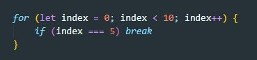
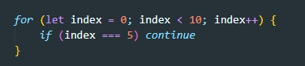
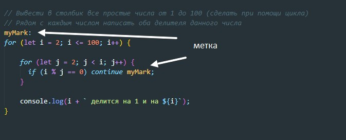
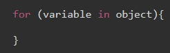
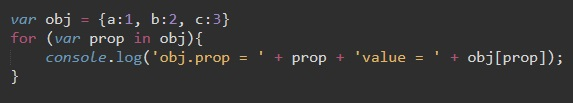
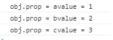

Для того что бы прервать цикл используется слово break
Что бы пропустить цикл используется continue
вместе с continue можно использовать метки. Если случится continue и после него указать метку то код начнет выполнение с метки
Этот цикл позволяет перебирать ключи (свойства) объекта. Но только тех ключей у которых свойство enumirable со значением true (т.е. эти ключи должны быть перечисляемые)
Синтаксис
Пример
Результат
